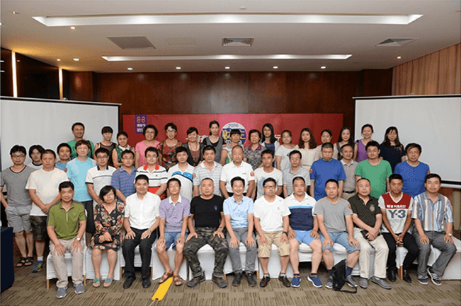

还记得是2016年的春节那几天，孩子每天拿我手机抢QQ红包。其实也抢不到多少，但有一天孩子突然和我说他抢到一个大红包，“哇塞，2016元的红包！”孩子当时那个骄傲的神情我现在还记得。
可能很多财主已经知道了，这个2016元的红包是秒钱发的，相信当时有不少人被这么大一个红包吓了一跳。当然不是全部都是现金啦，其中一部分是用在秒钱的理财红包。
于是在2016年，这个2016元的红包让我和秒钱结缘了。在我查阅了一番资料并详细了解了秒钱的情况后，我下载了秒钱APP，开始书写我与秒钱的故事。
实话讲，在结识秒钱之前我基本没有接触过互联网金融，平时仅有的理财方式就是定期到银行存钱以及用一下余额宝。身边朋友们有不少炒股的，但我自认为没那个天分，也觉得炒股实力倒是其次，更多的人是在投机。我也知道仅仅靠银行存钱是不够的，利息太低了。但苦于没有其他合适的理财方式，就这样存了很多年。
秒钱那个时候活期8%（现在降到了6%）、定期12%，这是非常吸引人的。我算了一下，存一年要比银行多收8倍以上，比余额宝也要高3、4倍。这样的收益不让人心动是假的，但刚刚接触我还是心有顾虑，于是我就认真研究了一下秒钱上的项目。它的收益是根据项目的时间长短来定的。短期低一点，长期就高一点。上面的项目都是融资租赁、商票、保理这些的。虽然我不懂，但是项目详情里融资方介绍、借款合同甚至投资记录都有。不敢说平台绝对安全，但它能清楚的了解到自己把钱投到哪里用在了哪里，这还是让人比较踏实的。除此之外，秒钱宣传风控做的非常到位，而且融资方还会承诺回购。作为一个门外汉，我认为这些能让我觉得足够安全了。
接着我在秒钱先放了1000元活期，想试一试。单从体验来说，从账号绑定到充值再到认购几分钟就完事，就投资成功了。过了几天我试着提现，到账速度也是很快的。就这样体验了一番之后，我觉得可以在秒钱里多放一些了。于是，我陆续从1万开始，慢慢的把银行里八成左右的存款都放进了秒钱。因为之前存钱养成的习惯，每次我都认购1年期左右的理财项目。一来收益高，二来我觉得中间确实没有什么需要用钱的地方。但还真是遇到了问题……
因为丈母娘住院急用钱，怎么才能把我的理财提现成了问题。因为我买的都是定期，不支持提前赎回，无奈只能找客服。客服人员非常耐心，告诉我项目可以在平台上转让，只要有人认购我转让的定期项目，我的钱就可以赎回来了。并且还把我拉进了“财主群”，让我的转让项目能够更快的出手。原来秒钱把所有的投资者都叫做“财主”，而且已经有来自全国各地的财主组成好多的QQ群来交流。“财主”这个词让我感觉还是挺贴切有趣的，在秒钱近一年的投资经历，也让我结识了很多天南海北的投资者，在和他们一起交流经验和心得的过程中，让我感觉找到了组织。之后这里就成为我们相互讨论、参与秒钱活动的大本营。我也从群里知道了秒钱的CEO钱道长以及每年都会举行的“88理财节”，心里也开始神往能够见一下钱道长。

没想到这一天来的很快，7月份得知8月初要在北京办财主见面会，因为我本身家就在北京，所以第一时间就报名了。之后终于见到了钱道长，真是百闻不如一见。会上钱道长深入浅出的给我们讲解了秒钱的运营模式以及风控措施，还为我们答疑解惑。并且我也和很多在群里认识的财主见了面，感觉通过秒钱结交了很多理财的好友。
88秒钱理财节在今年前所未有的持续了整整一个月。虽然我的大部分钱都已经投资了定期，但双倍收益让我们这些投资者踏踏实实的得到了益处。并且还能用投资积分兑换礼品，这让我感受到了秒钱的真诚。
又是一年岁末，我与秒钱结缘也将满一年。感谢QQ红包让我认识到秒钱这样一家不错的互联网金融理财平台。一年来不仅仅有财富的收获，秒钱平台更让我结识了许多志同道合的朋友，接触和学习到了更先进的投资理财观念。
开始投资的一年期项目马上就要到期了，不说别的，我还会继续投资秒钱。